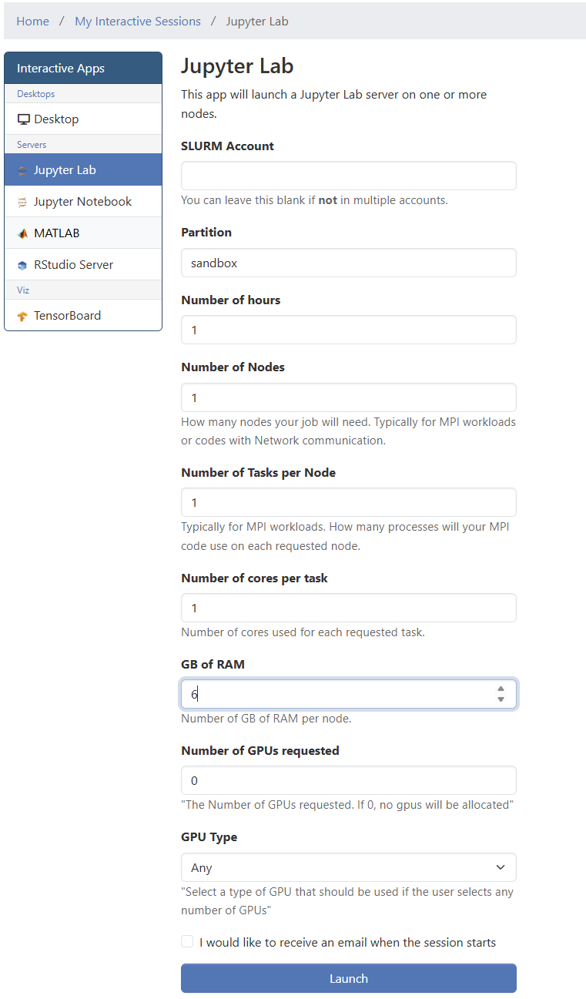
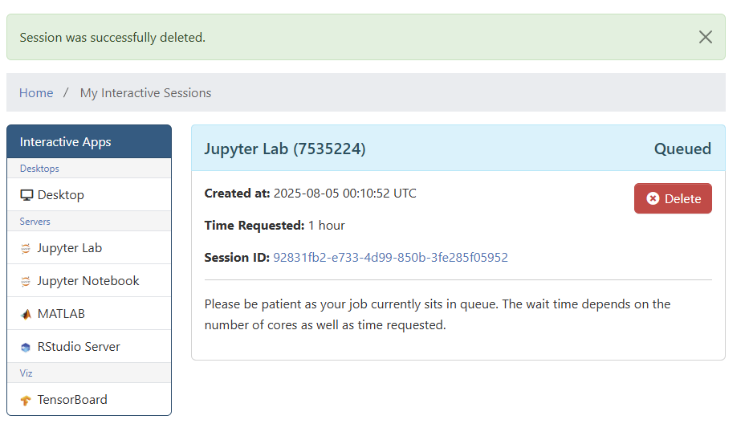
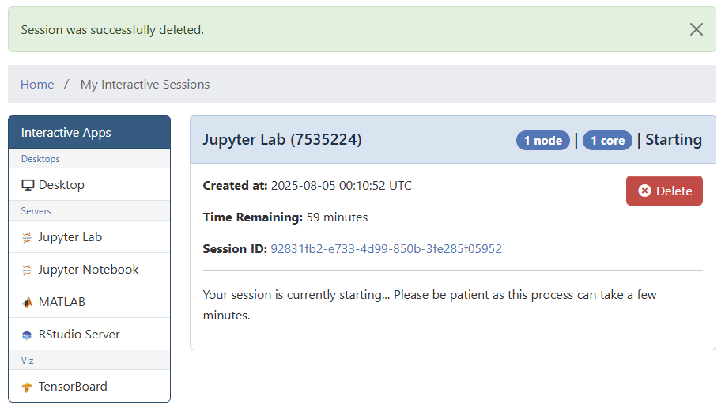
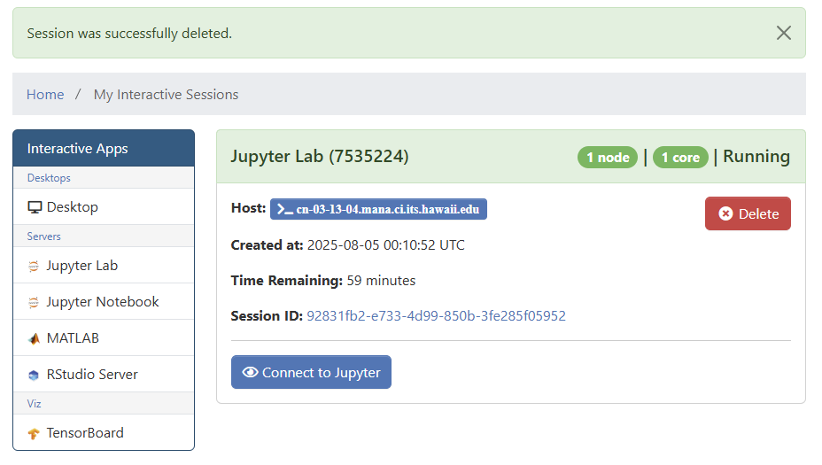

Interactive Jobs via the Web Portal
The Koa web portal, powered by Open OnDemand, offers a user-friendly way to launch popular interactive applications like Jupyter Notebooks, RStudio, and graphical desktops directly from your web browser.
How They Work (Behind the Scenes)
While these applications feel fully interactive, it's helpful to understand what happens when you click "Launch."
Analogy: Think of the web portal as a helpful waiter. You fill out a simple form (your order), and the waiter (the portal) takes that information and submits a formal ticket to the kitchen (the Slurm scheduler).
Essentially, the web portal automatically creates and submits a batch job on your behalf.
What This Means for You
-
No Scripting Required: The biggest advantage is that you don't have to write your own Slurm job script. The web form does it for you.
-
Queue Times Still Apply: Just like any other batch job, your interactive session might have to wait in the queue (
Pendingstate) if the cluster is busy. -
Subject to Partition Rules: Your session is still a Slurm job and must follow the rules of the partition you select, including maximum time limits.
-
You Get a Job ID: Your session will be assigned a unique Job ID, which you can use to monitor it if needed.
In short, the web portal provides the convenience of an interactive application with the power and scheduling of the underlying Slurm batch system.
Callout
Your Responsibility: Be a Good Cluster Citizen
The Koa cluster is a valuable, shared resource for the entire University of Hawaiʻi research community. When you launch an interactive job through the web portal (like Jupyter or RStudio), you are reserving a piece of the cluster for your exclusive use.
To ensure everyone has fair and timely access to these limited resources, we ask that you please follow two simple rules.
1. Request Only the Time You Need
When launching your job, please make an accurate estimate of how long you'll need the session. If you only need two hours for a task, please request two hours instead of the three-day maximum.
2. End Your Session When You Are Done
This is the most important rule. An active session holds resources hostage, even if you close your browser tab and are no longer using it. This prevents other researchers from running their jobs.
When your work is finished, please explicitly end your session by clicking the red "Delete" button in the "My Interactive Sessions" tab of the web portal.
Thank you for helping us make Koa a productive and efficient resource for everyone.
Submitting a Job
The first step is to login to the web portal for Koa and select the interactive app you want to run from under the Interactive Apps menu or by clicking on the window restore icon to bring up "My Interactive Sessions" and selecting the app you want to run from the left hand links.

Once the form comes up, you will want to provide it with what resources you will need, the partition you will be using and for how long you need the resources for. If you are submitting to a partition that may have a wait time longer than a few minutes, you may also want to check the box to receive an email when your job actually starts. This way you can do other work and not have to constantly monitor your pending job on Koa.

Once you hit launch your job will be queued. In this view, the important links and piece of information for troubleshooting would be:
- Job ID: The number in parenthesis next to the job title, which in this case is 7535224
- Session ID: The unique identifier for the job in the web portal itself. It also doubles as a link to the folder in your home directory that contains logs for your interactive app job.
- Delete Button: This button can be used to cancel your job or to end your job once you are done using the requested resources
- Job State: Found in the upper right of the Job title bar, which currently says Queued

Once the resources become available, the job state changes to starting. This step may take a little time as it is starting up the applications need to run your environment, which in this case is Jupyter Lab.

Finally, the job goes into a Running state and button to connect to your interactive app becomes available. In this case the button reads Connect to Jupyter.
Note, the job also provides you a link to the Host, in the case you need to bring up a terminal on the host to monitor you job using tools like htop or top.
Once you are done with your job, remember to hit the Delete button or to close the session from within your application to terminate your job.